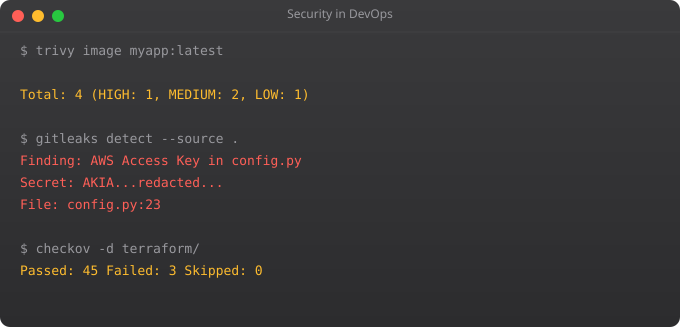

You cannot manage what you cannot measure. Monitoring is not optional in production -- it is the difference between knowing your system is down and finding out from angry users. But modern observability goes beyond uptime monitoring. The three pillars -- metrics, logs, and traces -- give you a complete picture of what your distributed system is doing at any moment.
Metrics: Numerical measurements over time. CPU usage, request rate, error rate, response time. Ideal for alerting on quantifiable thresholds. Prometheus collects and stores metrics.
Logs: Timestamped text records of events. Application logs, system logs, audit logs. Ideal for debugging what happened. ELK Stack (Elasticsearch, Logstash, Kibana) or Loki aggregates logs.
Traces: Records of a request's journey through distributed services. Shows how long each service took and where errors occurred. Jaeger, Zipkin, or AWS X-Ray provide distributed tracing.
# docker-compose.yml
version: "3.8"
services:
prometheus:
image: prom/prometheus:latest
ports:
- "9090:9090"
volumes:
- ./prometheus.yml:/etc/prometheus/prometheus.yml
- prometheus-data:/prometheus
grafana:
image: grafana/grafana:latest
ports:
- "3000:3000"
environment:
GF_SECURITY_ADMIN_PASSWORD: admin123
volumes:
- grafana-data:/var/lib/grafana
depends_on:
- prometheus
volumes:
prometheus-data:
grafana-data:global:
scrape_interval: 15s
scrape_configs:
- job_name: "prometheus"
static_configs:
- targets: ["localhost:9090"]
- job_name: "node"
static_configs:
- targets: ["node-exporter:9100"]
- job_name: "myapp"
static_configs:
- targets: ["myapp:8000"]
metrics_path: /metrics# The RED Method (for services)
# Rate: Request rate per second
sum(rate(http_requests_total[5m])) by (service)
# Errors: Error rate percentage
sum(rate(http_requests_total{status=~"5.."}[5m])) /
sum(rate(http_requests_total[5m])) * 100
# Duration: Response time percentiles
histogram_quantile(0.99, rate(http_request_duration_seconds_bucket[5m]))
histogram_quantile(0.50, rate(http_request_duration_seconds_bucket[5m]))
# Infrastructure metrics
# CPU usage
100 - (avg by(instance) (rate(node_cpu_seconds_total{mode="idle"}[5m])) * 100)
# Memory usage
(1 - (node_memory_MemAvailable_bytes / node_memory_MemTotal_bytes)) * 100
# Disk usage
(1 - (node_filesystem_free_bytes / node_filesystem_size_bytes)) * 100# alerts.yml
groups:
- name: production
rules:
- alert: HighErrorRate
expr: |
sum(rate(http_requests_total{status=~"5.."}[5m])) /
sum(rate(http_requests_total[5m])) > 0.05
for: 5m
labels:
severity: critical
annotations:
summary: "High error rate on {{ $labels.service }}"
description: "Error rate {{ $value | humanizePercentage }}"
- alert: DiskSpaceLow
expr: (node_filesystem_free_bytes / node_filesystem_size_bytes) < 0.1
for: 10m
labels:
severity: warning
annotations:
summary: "Disk space below 10%"Monitoring tells you when something goes wrong (alerting). Observability tells you why it went wrong (debugging). Monitoring is about known unknowns. Observability is about unknown unknowns -- being able to ask arbitrary questions about your system's state.
Rate (requests per second), Errors (error rate), Duration (response time). These three metrics cover the external behaviour of any service. If all three look good, users are probably happy. If any degrades, you have a problem to investigate.
Prometheus collects and stores time-series metrics. Grafana visualises them with dashboards. Prometheus has a built-in UI for queries, but Grafana provides production-quality dashboards, alerting, and the ability to combine data from multiple sources.
For small setups: Promtail + Loki + Grafana (the lightweight stack). For larger setups: Filebeat + Elasticsearch + Kibana (ELK stack). Promtail ships logs from servers, Loki stores them, Grafana queries and visualises them alongside metrics in one dashboard.
Alert on symptoms that affect users, not causes. Alert on: error rate above 1%, response time above 2 seconds, disk space below 15%, service down. Do not alert on CPU at 80% unless it is causing user impact. Every alert should require immediate action -- alert fatigue kills response.
In Part 10, we cover Kubernetes -- the container orchestration platform that runs containerised applications at scale.
← Back to BlogGoogle's SRE framework introduced a disciplined approach to reliability that is now widely adopted. Service Level Indicators (SLIs) measure specific aspects of service behaviour. Service Level Objectives (SLOs) set targets for those indicators. Error Budgets define how much unreliability is acceptable before feature development must pause to focus on reliability work.
# SLI: measurement of service behaviour
Availability SLI = successful_requests / total_requests
Latency SLI = requests_under_200ms / total_requests
Error rate SLI = 1 - (error_requests / total_requests)
# SLO: target for the SLI (measured over a rolling window)
Availability SLO = 99.9% (over 30 days)
Latency SLO = 95% of requests under 200ms (p95)
Error rate SLO = error rate below 0.1%
# Error budget = 100% - SLO
# 99.9% SLO => 0.1% error budget = 43.8 minutes downtime/month
# PromQL for availability SLO
(1 - (
sum(rate(http_requests_total{status=~"5.."}[30d]))
/
sum(rate(http_requests_total[30d]))
)) * 100# Loki alert rule in loki-rules.yml
groups:
- name: app-alerts
rules:
- alert: HighErrorLogRate
expr: |
sum(rate({app="myapp"} |= "ERROR" [5m])) > 10
for: 2m
labels:
severity: warning
annotations:
summary: "High error log rate for {{ $labels.app }}"
- alert: DatabaseConnectionFailures
expr: |
count_over_time({app="myapp"} |= "connection refused" [5m]) > 5
for: 1m
labels:
severity: critical